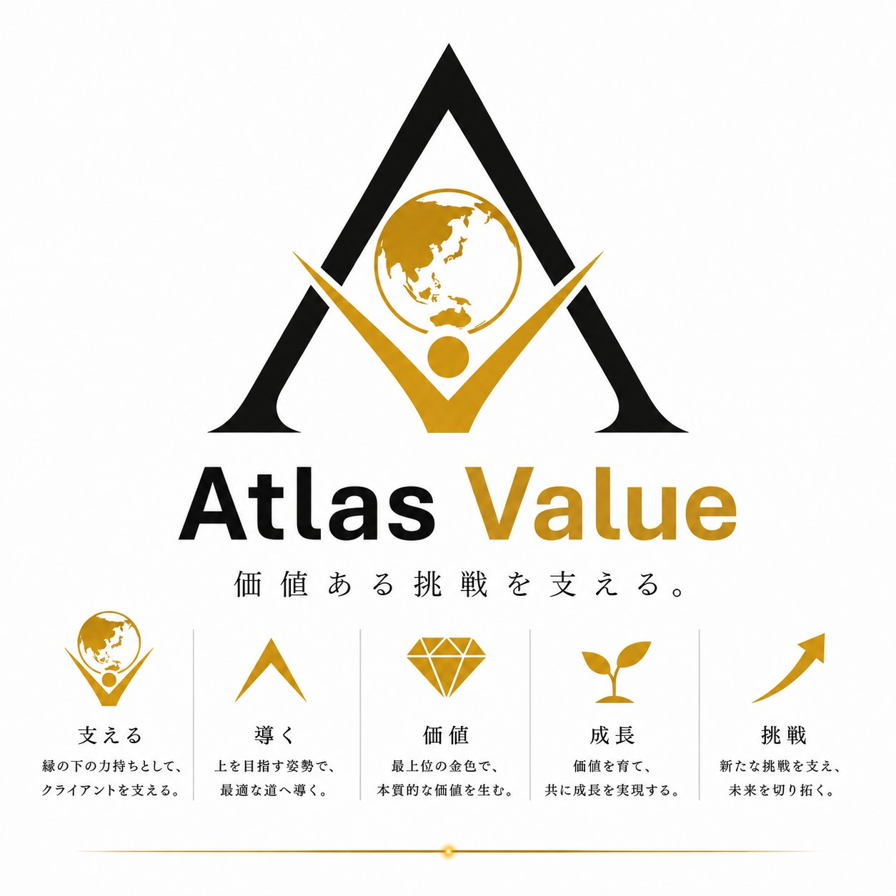

PROFILE

YOSHINOBU ARAI
Atlas Value（アトラスバリュー） 代表 ／ 商品開発診断コンサルタント
私は40年以上にわたり、健康雑貨・ヘルスケア用品や育児用品の商品開発
品質保証、OEM選定、事業開発の現場に携わってきました。
著名着圧ソックスや磁気治療器など、数多くの商品の開発現場で、「なぜ売れるのか」「なぜ売れないのか」を見続けてきました。技術の優劣ではなく、その奥にある「人の困りごと」や「言葉にならない不安」にこそ、価値の種が眠っていることを学んできました。
ORIGIN
今も判断の軸になっている、ある出来事があります。
健康雑貨の商品開発に携わる中で、育児用品の商品開発を任されていた時期のことです。当時、哺乳瓶や乳首の消毒は、薬液と煮沸が一般的でした。市場調査を行っても、お母さんたちから特に不満の声はありませんでした。しかし私は、「赤ちゃんが毎日使うものを殺菌液に浸けることに、心では不安を感じているのではないか。」「夏場に大量のお湯を沸かして煮沸することを、負担に感じているのではないか。」そうした言葉にならない本音があるのではないかと考えました。
そこで思いついたのが、電子レンジで簡単に消毒できる方法です。この商品は大ヒットし、多くのお母さんたちから「安心できました。」「本当に助かりました。」というお手紙をいただきました。商品そのものが売れたこと以上に、お客様の不安を解消できたことが、今でも心に残っています。
同じ時期、粉ミルクの調乳にも大きな課題がありました。当時、粉ミルクは60度のお湯で調乳するよう説明されていましたが、その温度で保温できる給湯ポットがなかったため、お母さんたちは夜泣きする赤ちゃんをあやしながら、熱湯と湯冷ましを用いて調合しなければなりませんでした。危険であり、しかも眠い目をこすりながらの大変な作業です。
そこで、一旦煮沸した調乳に適したお湯を60度で清潔に保温できる、中身の見えるガラスビーカー式の給湯ポットを開発しました。この製品は大ヒットとなり、育児の苦労のひとつを解消することができました（その後、WHOが粉ミルクの溶解温度基準を70度以上に改め、大手家電メーカーもこれに追随したため、この製品としての役割は終焉しました。）
お客様は、本当に困っていることを必ずしも言葉にしてくれるわけではありません。だからこそ、言葉の奥にある本音を見極めることが、商品開発でもっとも大切な仕事である。そう確信するようになりました。この気づきが、現在のAtlas Valueの判断品質と目利き力の原点になっています。
MITSUME
それがAtlas Valueの目利き力です。技術の優劣を評価するのではなく、その中に眠る価値の種を探すこと。お客様自身も気づいていない困りごとを見つけ、市場を見直し、価値をシンプルな言葉に翻訳すること。40年間、現場で培ってきたこの目を、貴社の商品開発診断に活かします。
※本サイトの内容は商品開発における気づき・示唆の提供を目的としており、効能効果を保証するものではありません。

ATLAS VALUE
「Atlas Value（アトラスバリュー）」という名前には、価値ある挑戦を支える存在でありたいという思いを込めています。ギリシャ神話のアトラス神のように天空を担い、羅針盤として進むべき方向を示しながら、判断品質を高め、まだ見ぬ価値との出会いへ導くことを使命としています。